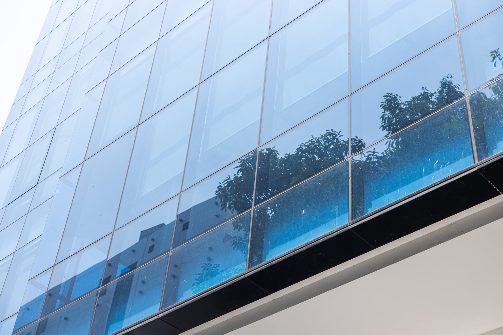
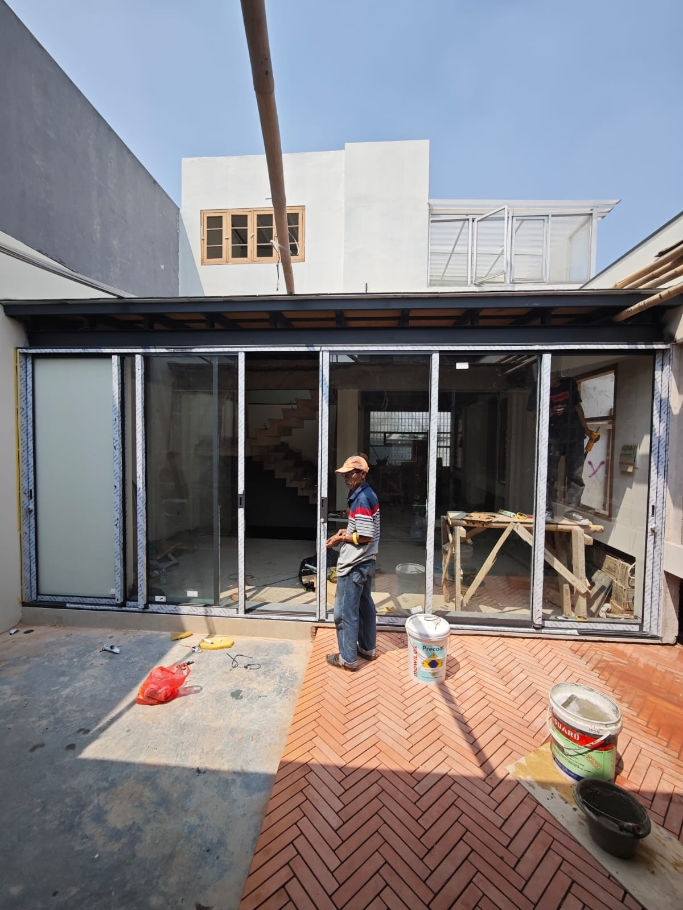
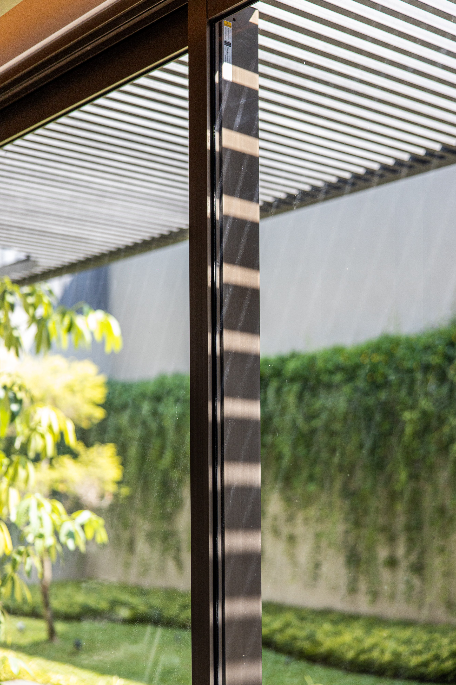
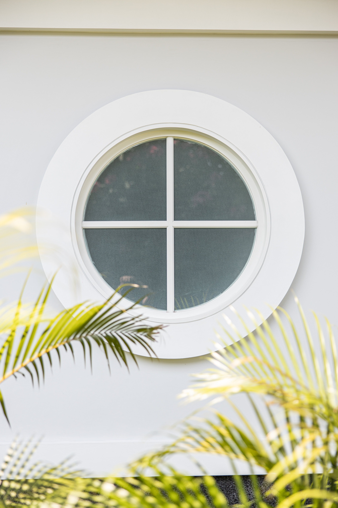
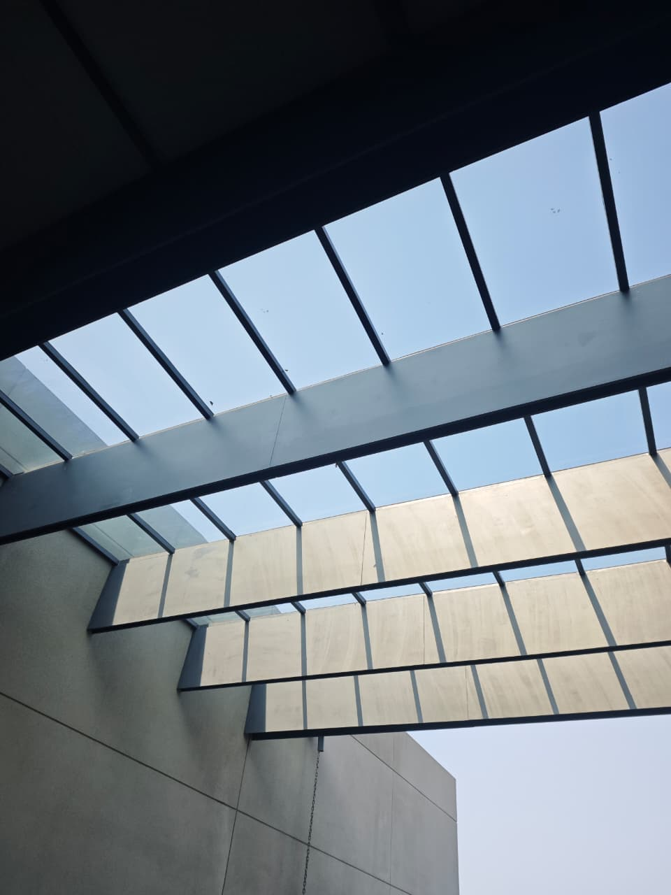

Founder
Aron Naldo
11 years in private banking and 2 years as General Manager at a glass and aluminium company.
- Management
- Project Management
- Quality Control
- Client Relationship
- Business Development

Bandung, Indonesia
Professional Glass & Aluminium Application for Residential & Commercial Projects.
Built with experience. Executed with precision.

Introduction
Arth Project is a glass and aluminium application company based in Bandung, Indonesia, serving residential and commercial projects.
Founded in 2025, Arth Project combines an experienced team with a strong commitment to quality, precision, and professional project execution.
About Arth Project
Arth Project is built on a combination of management experience and technical expertise — a young company run by people who already know the work.
Founder
11 years in private banking and 2 years as General Manager at a glass and aluminium company.

Partner
15 years of experience in glass and aluminium.
What We Do
Frames measured and fitted to close tolerances, for both new builds and renovation.
Entry, interior, and sliding door systems built for daily use and a clean finish.
Glazing for windows, partitions, and façades, matched to the surrounding frame system.
Toughened glass application for openings and areas that call for added durability.
Layered glass installation for façades and openings where safety is a priority.
Fit-outs for offices, banks, cafés, and other commercial spaces, start to finish.
Private homes and residential developments, from a single window to a full house.
Non-standard sizes and configurations, worked out with the architect or client directly.
Why Arth Project
Our team brings direct, hands-on experience in glass and aluminium work.
Close attention to measurement, alignment, level, joints, and finishing.
Every project receives dedicated attention to quality control.
A structured process from measurement through to handover.
Project Process
Quality Control
Every detail matters. Each project is checked across the points that determine how it looks and performs over time:


Material & Systems
Portfolio

Let's discuss your glass and aluminium requirements.
Contact